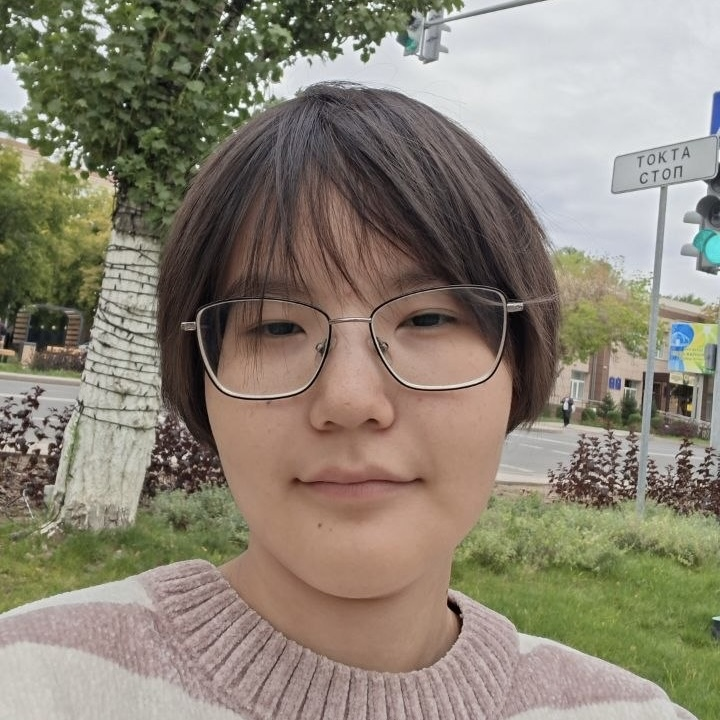
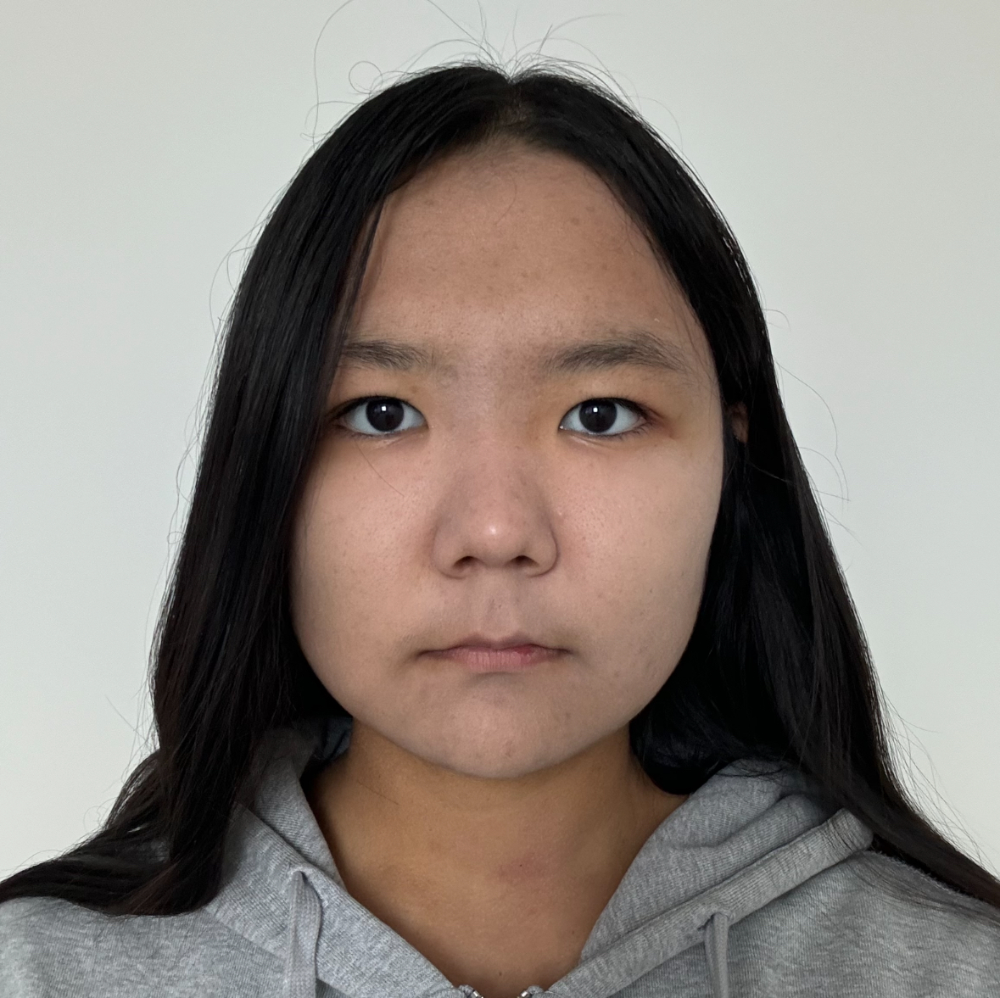

Clear purpose
Provide accessible online language education with native speakers and certified professionals.
WHO WE ARE
Empowering learners and tutors to connect, learn, and grow across cultures.
OUR MISSION
TilUP was created as a modern educational platform aimed at breaking language barriers. We believe that learning a new language should be engaging, flexible, and accessible to everyone, regardless of where they are in the world.
Provide accessible online language education with native speakers and certified professionals.
Build a supportive network where learners exchange experiences and discover traditions.
Deliver verified curriculum guidelines, flexible hours, and interactive conversation clubs.
DEVELOPMENT TEAM
Meet the students behind the TilUP web project, responsible for designing the user experience, HTML structure, and responsive stylesheet styling.

Student passionate about web development, UI structuring, and creating seamless user interactions. Focused on semantic HTML layout and typography.

Enthusiastic about web technologies, component hierarchy, and responsive styling. Dedicated to interactive UI components, tables, and form handling.